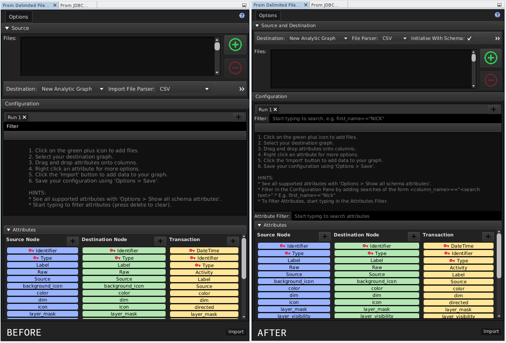
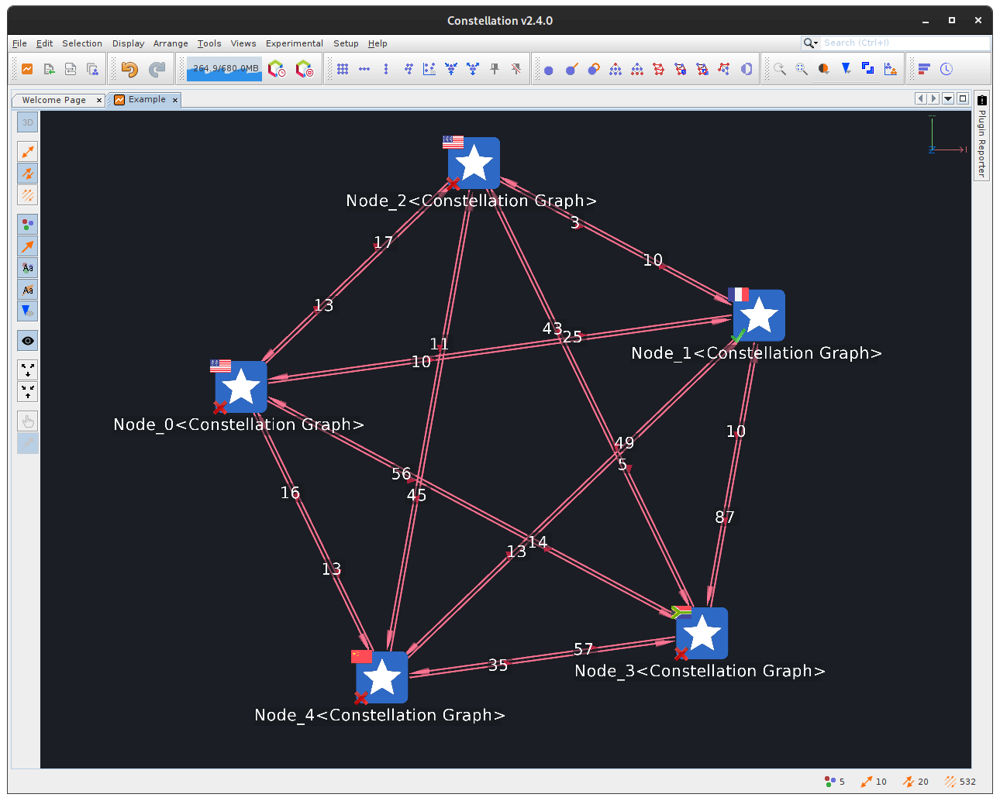
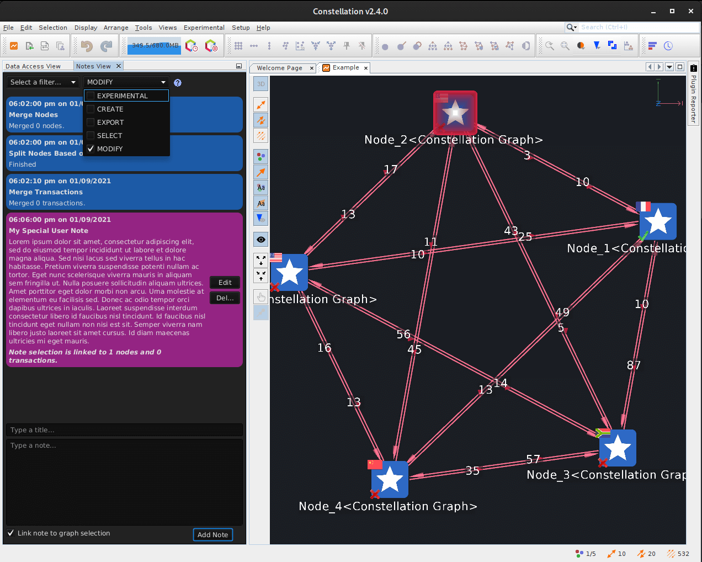
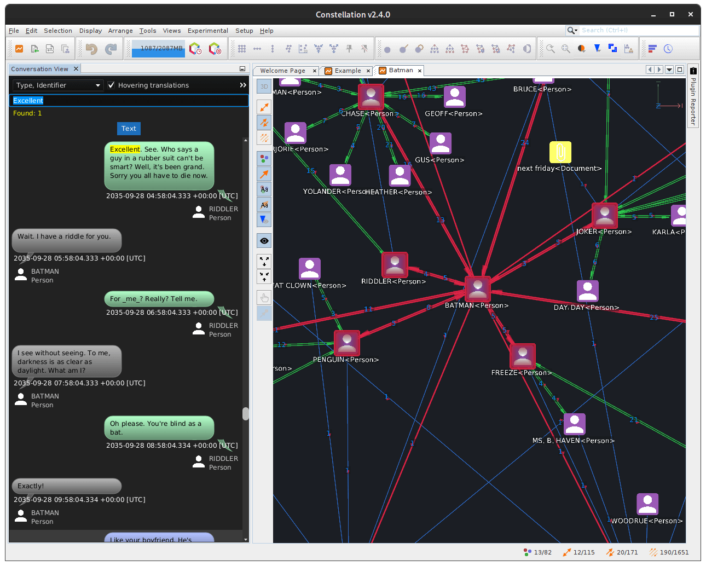
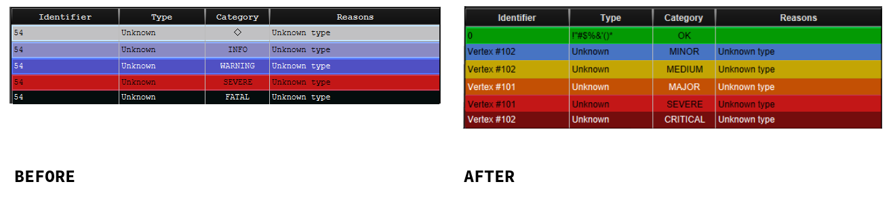
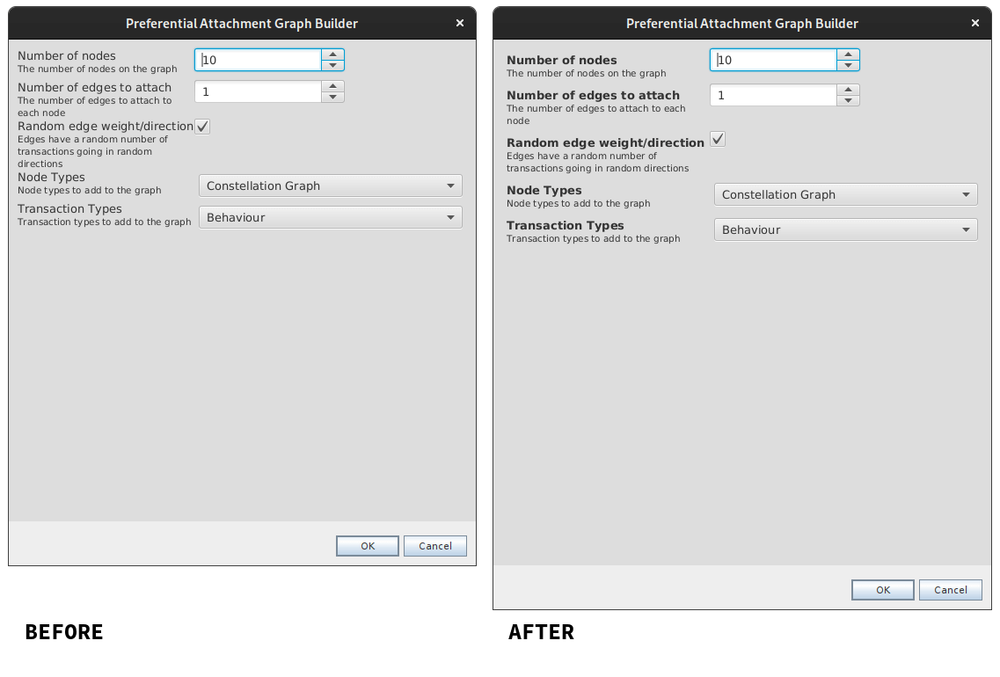
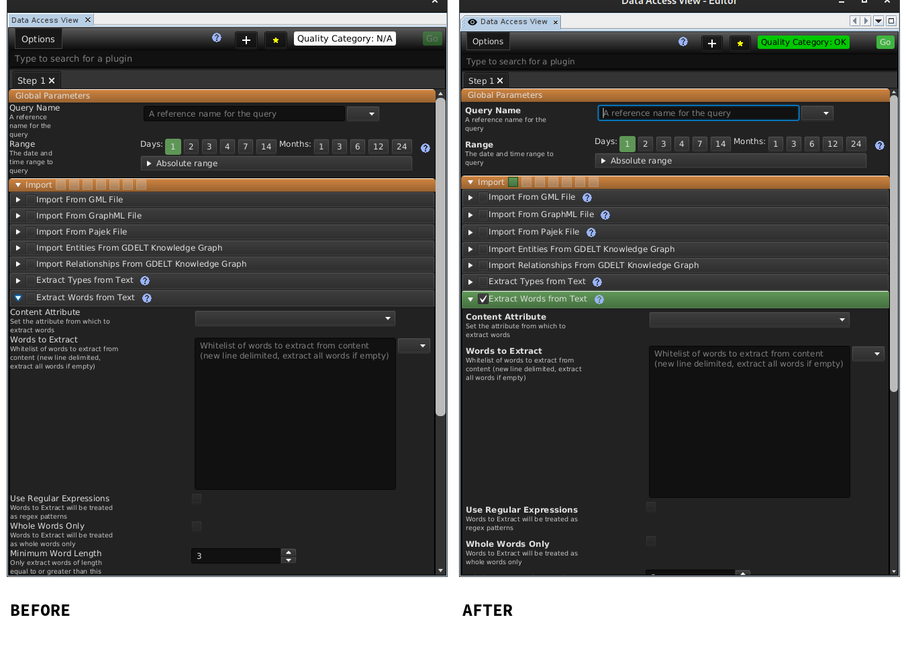

What's new in Constellation v2.4
Here is a list of changes we've added to this version of Constellation v2.4 which are also included in Constellation Cyber v1.3.
Visualise large datasets in a few mouse clicks!
Building a graph from scratch is a time consuming and fiddly process. The quickest way to set up a graph is to import datasets from a file and Constellation supports numerous file types such as CSV, Excel, XML and JSON. The Import from Delimited File menu option has been renamed to Import from File to better reflect all the different file types that can be handled.
The import process has been streamlined to make it easier to use. Better error handling has been added and it's now easier to delete files if you make a mistake or longer want to import them. Searching for data or graph attributes during the import has been made more obvious, which is handy if you are working with extremely large datasets.
The same improvements have been made to the Import from Database functionality (previously labelled Import from JDBC).
Improvements to the graph display
We've listened to user feedback and changed the default font colour for graph labels to white to make them easier to read.
Notes View
Do you want to keep track of what actions have been performed on a graph or what type of analysis has been done? The Notes view has been moved out of the Experimental into the main Views menu. You can use this for adding comments to individual nodes or transactions or a group, or the entire graph. This is an easy way to add important information to your graph. Notes are saved directly to the graph and can be viewed by other people if the graph is shared with them.
The notes view also has the capability to display and track auto notes which are generated automatically when an action is performed on a graph, such as a plugin being run. There are some handy filtering options so you can focus on the auto notes you are most interested in.
Searching on the Conversation View
The conversation view is a powerful way of analysing content associated with transactions on graphs. You can now search the conversation view for keywords or phrases, and you can see a count for how many times they appear in the text. You can also search the translations too.
Quality Control View Improvements
Quality Control category names and colours have been updated to match commonly seen category names and colours. The category names now are:
- Critical
- Severe
- Major
- Medium
- Minor
A new category OK has been added for when a Quality Control rule has not been flagged.
Plugin Labels and Descriptions Formatting Improved
The labels and descriptions of plugin parameters have been refined to be easier to read and improved aesthetics such as adding spacing between parameters and bolding text.
These changes have also been applied to the plugins available from the Data Access View.
Bug Fixes and Performance improvements
Release 2.4 includes numerous bug fixes such as:
- Update to the Missing Type Quality Control Rule to flag blank types
- Fix to conversation view for unexpected locking
- Enabling type-based layers in the Layers view (currently located under Experimental)
We have also fixed the bug with remembering the last file location for opening and saving files, so it's easier to work with files in your current directory.
To improve performance the "getting started" script in the scripting view has been tweaked to make it more efficient for large graphs. Code dependencies have been updated to the latest versions for maximum performance (geotools, apache-poi, jackson, controlsfx).
Want to know more?
You can find out more information about the latest updates on the What's new page once you have installed version 2.4. There's loads of extra details available in the Release Notes and Change Log.
Would you like to learn more about how Constellation works?
There is a training package available on GitHub to learn how to make the most use of the various features in Constellation. There is also developer training for those seeking to deep dive into the underlying source code.
Contact Us
Do you have any feedback or suggestions for improvement? Noticed a bug? You can log an issue via the Help menu or clicking here.